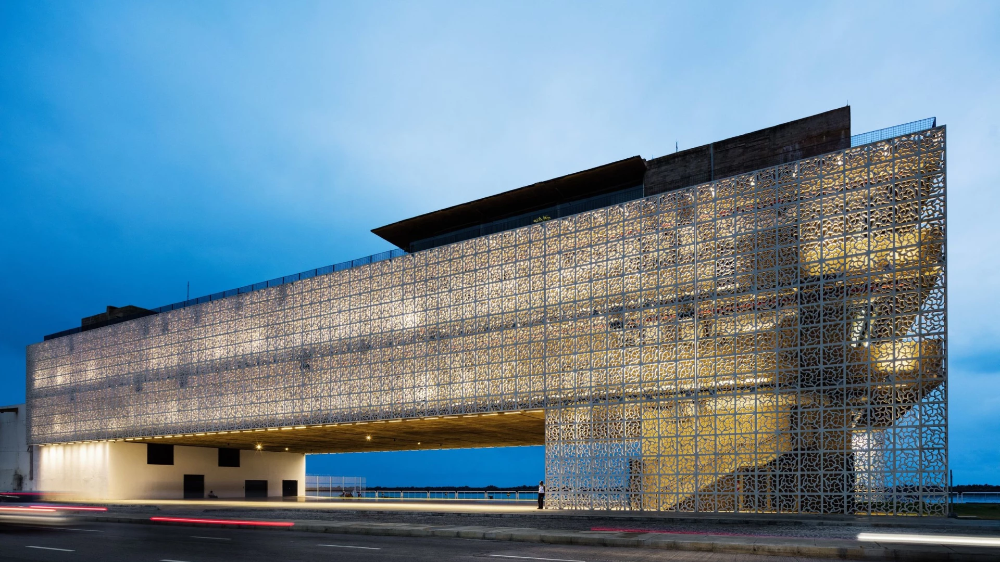

Praça do Arsenal
A Praça do Arsenal é um dos locais mais animados do Recife Antigo. Localizada próximo ao Marco Zero, é um ponto de encontro para eventos culturais, feiras de artesanato e apresentações musicais.

Cais do Sertão
O Cais do Sertão é um museu interativo que celebra a cultura nordestina, especialmente a vida e obra de Luiz Gonzaga, o Rei do Baião. Localizado às margens do Rio Capibaribe, oferece uma experiência imersiva na cultura sertaneja.
